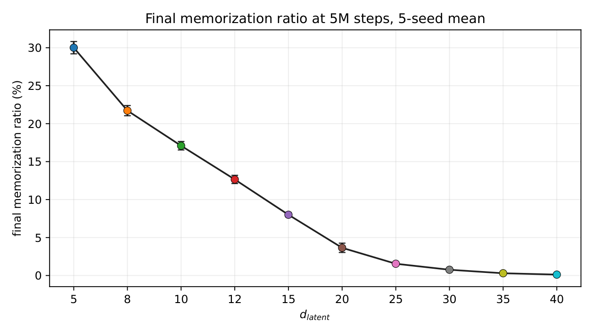
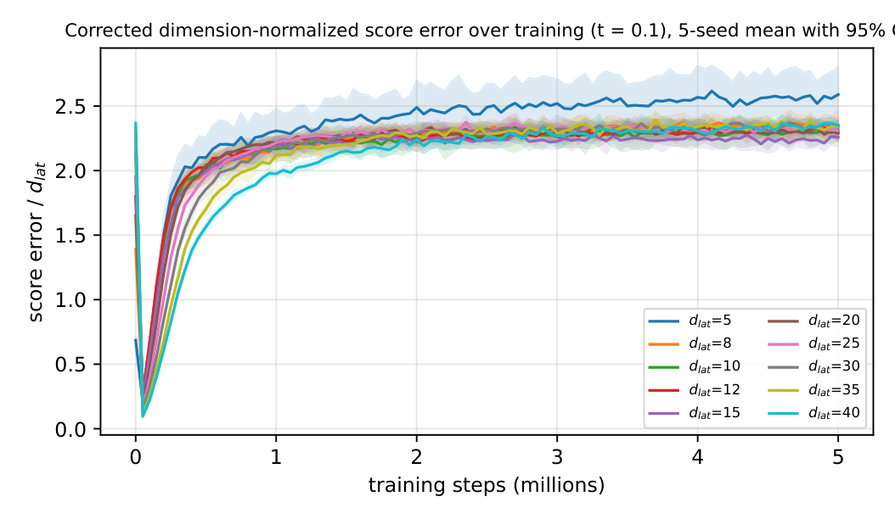
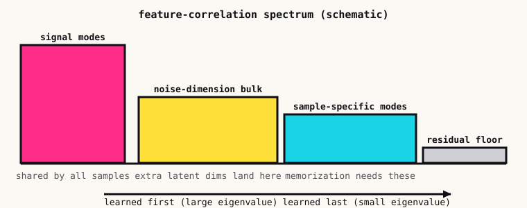
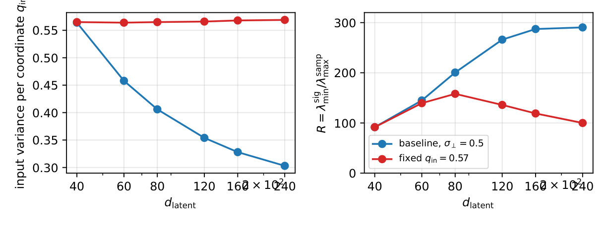

Why giving a diffusion model extra room delays memorization
Latent diffusion models don't diffuse pixels. They diffuse the output of an autoencoder, and that latent space is almost always wider than the data needs. A face dataset might have a couple dozen real degrees of freedom and live in several hundred latent dimensions. This post is about what those spare dimensions do, and it's the first project where I came away trusting a result a lot more than I trusted my explanation of it. I'll try to keep those two things separate.
Memorization is the default, generalization is the detour
Here is the uncomfortable fact about score-based generative models. The best possible score function for a finite training set is exactly the score of that set, and a model that fits it perfectly reproduces the training points. (I wrote about my first attempt to think about this in a failed theory.) Real models don't do that, at least not for a long time. Recent work describes training as a transition from population learning, where the model captures the data distribution, to sample collapse, where it starts fitting the particular points it was shown.
That makes memorization a privacy and copyright problem, but also a basic scientific one: what decides when the transition happens? We asked one narrow version of that question. Hold everything else fixed and make the latent space wider. What happens to the timing?
The phenomenon
The cleanest version of the experiment is synthetic, so we know the truth. The data is a mixture of Gaussians with a known intrinsic dimension of 5, embedded in latent spaces of increasing width. The score network is an MLP with a fixed hidden width of 256, five seeds per width, 5M training steps. Memorization is measured with a nearest-neighbor ratio test: a generated sample counts as memorized if it's much closer to one training point than to its second-nearest.

Nothing about the network gets bigger, and the data doesn't change. The only thing that moves is how many spare dimensions the latent has, and memorization goes away.
The same effect, measured without a threshold
A nearest-neighbor threshold is a blunt instrument, so we also looked directly at the score. In this synthetic setting we have the exact population score, which means we can measure how far the learned score is from it on held-out data.

Every curve looks the same shape: a quick dip as the model learns the true distribution, then a climb as it moves toward the empirical score. By 5M steps every width up to 40 has converged to about the same level, around 2.3 per coordinate. So the final score error is flat in the latent dimension while the timing differs by a lot. That is a useful correction to a lazy reading of the first figure: wide latents don't stop the model from eventually overfitting in score space. They delay it.
Extending the same fixed-width sweep to 240 dimensions makes the delay monotone over the whole range. Measured as the time for the error to double from its minimum, it's at most 100k steps for widths up to 40, 200k at 60, 500k at 80, 800k at 100, 1.55M at 120, 2.5M at 140, and not reached within 5M steps for 160 and above. Across the sweep that's more than a 25-fold delay.
Is it just the test getting worse?
A skeptic should immediately worry that a nearest-neighbor test loses sensitivity as dimension grows, so the decline might be the measurement rather than the model. We checked this two ways.
- Project to the signal coordinates. A sampler that copied a training point's signal coordinates but redrew its null coordinates would be invisible to the full-space test at high dimension. So we ran the same test after projecting both generated and training points onto the 5 signal coordinates. The decline survives, and deliberately planted "signal copies" are detected in both versions at the same rate, so the test isn't blind.
- A threshold-free alignment score. Let the alignment between the learned score and the empirical score of the training set be 0 for the true population score and 1 for a perfect fit of the training set. It reaches 0.75, 0.54, 0.39 and 0.31 at 5M steps for widths 5, 10, 20 and 40, and it passes 0.3 more than 30 times later at width 40 than at width 5.
A spectral explanation
To say why, we used a random-feature theory of diffusion training (Bonnaire and collaborators, 2025). In that picture the score network's feature-correlation matrix has a spectrum, and under gradient flow different eigen-directions are learned in parallel at rates set by their eigenvalues: large eigenvalues get learned first, small ones last.
The new part is what happens when the data lives on a low-dimensional subspace of a wider latent space. Evaluating the existing theory for data with a few strong signal directions and many weak ones, the spectrum splits into four blocks.

That gives a clean story: more spare dimensions, more mass in the buffer, later memorization. We also found that the mechanism acts through a specific quantity, the pre-activation variance of the random features. As the latent widens, that variance falls and the nonlinear feature mass shrinks, which pushes the sample-specific modes out in time.
The check that convinced me the quantity is the right one is a control. If you widen the latent but hold that pre-activation variance fixed, most of the predicted growth in the ratio between the signal and sample-block edges disappears: it grows 3.17-fold over widths 40 to 240 in the baseline and only 1.09-fold in the control.

Real images
Synthetic mixtures are a good place to understand a mechanism and a bad place to claim anything about faces, so we repeated the experiment on CelebA and CIFAR-10 at 32 by 32. For each latent width we train a convolutional VAE on the full training split and freeze it. We then train a depth-five MLP score model with hidden width 1024 on the encodings of a diverse subset of 1,000 training images, for 5M steps over five seeds. Memorization is the pixel-space nearest-neighbor ratio of 10,000 decoded samples against those 1,000 images.
There's a catch on the narrow end. A very narrow VAE erases the identity of its inputs before the score model ever sees them, so "memorization" there is meaningless: the autoencoder's own reconstructions already look nothing like the training images. So we only compare widths above an identity threshold, where the VAE's reconstructions still pass the same memorization test.
Above that threshold, the time to memorization grows with width. The mean step at which 5% of samples are memorized increases by 3.6 times on CelebA and 1.4 times on CIFAR-10. Quality, measured by FID, follows a separate tradeoff and is best at intermediate widths. Also, past about 140 dimensions on CelebA and about 160 on CIFAR-10, the extra coordinates the VAE adds collapse to the noise floor, so the effective width isn't the nominal one. That's one reason the real-data curves are noisier than the synthetic ones.
Can you predict it from the encoder?
If the mechanism is real, you should be able to read the memorization onset off the frozen latent spectrum before training a score model at all. We built a one-constant "clock" from the sample-mode eigenvalue of the latent spectrum and tested it by fitting on every width but one and predicting the held-out width. The log error was 0.41 on CelebA and 0.15 on CIFAR-10, comparable to a seven-parameter in-sample fit.
I don't want to oversell that. A clock that depends on the latent width alone does as well or better on CelebA, the fitted constant differs by a factor of two between the two datasets, and over the full CelebA sweep (50 to 200 dimensions) the clock captures only 1.78 times of a 3.9-fold slowdown. The frozen spectrum puts widths in the right order. It doesn't yet get the scale right. We report it as a diagnostic, not a contribution.
What we don't know
This is the part I care most about getting right, so it's the part we wrote most carefully in the paper too.
- The mechanism is verified in the random-feature network, not in trained networks. In the synthetic MLPs, the first-layer pre-activation variance is the same at every width at initialization (0.20 at width 5, 0.19 at width 40) and at 50k steps (0.68 against 0.69). It only separates later, growing together with memorization at small widths. So we can't claim that width sets this variance and the variance causes the delay. The correlation is there; the causal arrow isn't established.
- It doesn't transfer to spatial latents. A pilot with a DiT denoiser on a 4 by 4 grid of latent channels does not show the decline: memorization stays high across channel counts. The effect is established for vector latents with MLP denoisers.
- Small training sets. All sweeps use at most 1,000 training points, and a sweep that scales network width together with latent width is a capacity sweep, which is a different question.
- A candidate that would close the gap: a quantity that width sets before memorization begins and that predicts its onset. One consistent with our data is the per-coordinate gap between the empirical and population scores, which grows 3.6 times from width 5 to width 40.
Why I care
Everything I work on in AI for science has the same shape: a tiny training set, a generative model that could easily copy it, and an expensive question about whether it learned something real. Understanding what makes a diffusion model generalize rather than memorize is, to me, one of the most practically important open questions in the field, and it's one where theory can still say something checkable.
I presented the workshop version at ICML 2026 in Seoul, with Ryan Shahbaba, Kevin Peng and Avni Garg as coauthors. The extended ICLR 2027 submission, under review, is with Ryan.